PDM重命名库名称
准备：
1、确保用户已将文件检入PDM库种；
2、确保用户暂时停止使用PDM库；
3、操作需要涉及数据库修改，强烈建议你对SQL server的PDM数据库进行备份。#备份方法参考
1、更新Projects表
在更新Projects之前，您需要将表中触发器禁用，以对SQL Express edition版本为例：
1.1. 打开SQL Server Management Studio，并且以管理员身份（sa）登录；
1.2. 展开【数据库】——找到需要重命名的数据库（SOLIDWORKS PDM）——【表】——dbo.Projects——触发器，右键，对“OnUpdateProjectTrigger”触发器进行禁用
确保禁用后的触发器图标如下图所示（带有×图标）
1.3. 禁用触发器后，您需要打开dbo,Projects表，选择Projects表，右键，选择“编辑前200行”
1.4. 更新第一行的Name列信息（ProjectID=1），将库名称改为新命名名称（NEW SOLIDWORKS PDM）
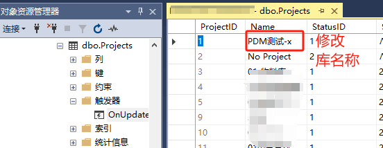1.5. 修改Projects表中信息后，启动“OnUpdateProjectTrigger”触发器
2、更新ArchiveServers和SystemInfo表
2.1. 找到dbo.ArchiveServers表，右键，选择“编辑前200行”
2.2. 更新所有可用行的VaultName名称为新库名称（NEW SOLIDWORKS PDM）
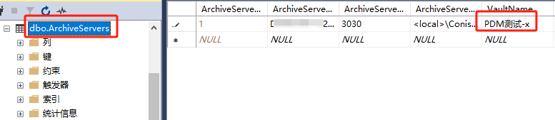2.3. 找到dbo.SystemInfo表，右键，选择“编辑前200行”，更新VaultName列为新库名称
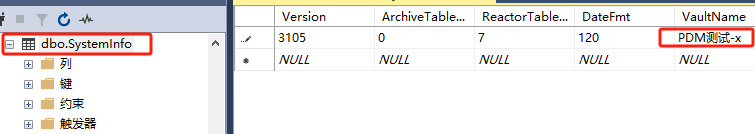3、更新ConisioMasterDb数据库
3.1. 浏览ConisioMasterDb数据库——展开【表】——右键dbo.FileVaults表——选择“编辑前200行”
3.2. 更新VaultName为新库名称
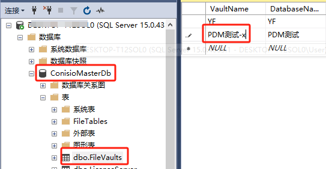4、更新存档服务
注意：若存在复制存档，需要在每个复制存档服务器重复这些操作
4.1. 停止存档服务器服务
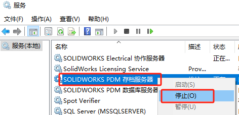4.2. 打开存档服务器注册表（win+R开始——输入regedit），浏览至
1 | HKEY_LOCAL_MACHINE\SOFTWARE\SolidWorks\Applications\PDMWorksEnterprise\ArchiveServer\Vaults\<库名称>\ArchiveTable |
，修改存档路径名称：
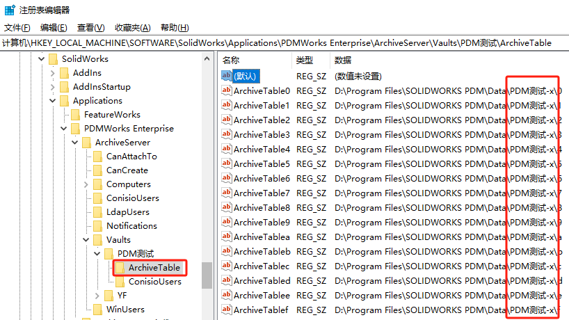4.3. 打开存档服务器存档文件路径，修改存档文件夹为新库名称
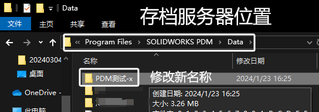4.4. 在注册表中，右键修改重命名注册表键，修改为新库名称
注册表键路径：
1 | HKEY_LOCAL_MACHINE\SOFTWARE\SolidWorks\Applications\PDMWorksEnterprise\ArchiveServer\Vaults\<库名称> |
4.5. 浏览以下注册键，更新新库名称到“Vaults”值
1 | HKEY_LOCAL_MACHINE\SOFTWARE\SolidWorks\Applications\PDMWorks Enterprise\ArchiveServer\Computers\<local>\Archives |
4.6.开启存档服务器服务
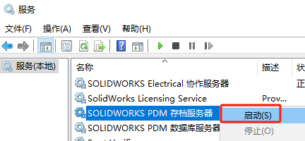5、重启数据库服务器服务
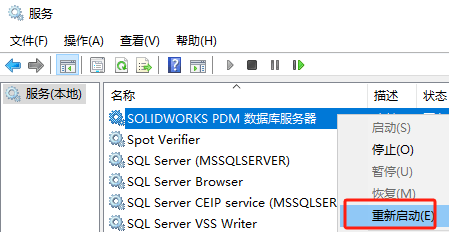6、删除客户端旧库名称本地视图信息，重新生成新视图
注意：删除本地视图时若PDM正在运行中，清先退出登录PDM
6.1. 删除本地视图，若过程中需重启客户端，请重启客户端
如果有提示登录，并且无法登录的情况。直接确定忽略他
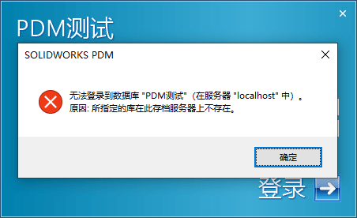 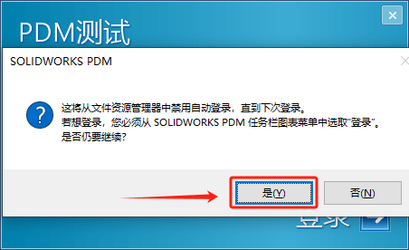 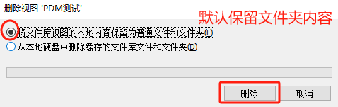6.2. 打开注册表，浏览并删除啊如下注册键：
1 | HKEY_CURRENT_USER\Software\SolidWorks\Applications\PDMWorks Enterprise\ConisioAdmin |
 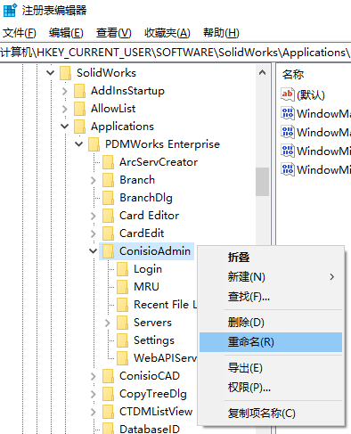
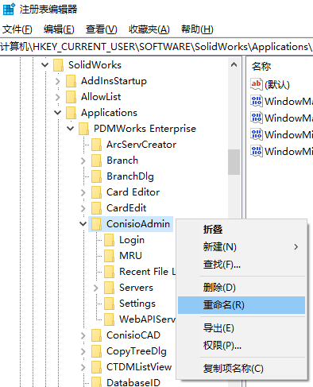
6.3. 通过【视图设置】，生成新视图，
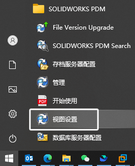6.4. 重启客户端，确保客户端没有与旧名称库进行连接
6.5. 您现在应该能够登录并使用改名后的文件库。请确保尝试检索现有文件的不同版本，并添加一些新文件，以确保重命名成功。
注意：如果重新命名文件库之后，登录或处理文件出现问题，请验证上述步骤中所有数据库及注册表是否更新，寻找拼写错误，检查存档服务器日志，确认是否有任何与重命名的文件库报错日志。